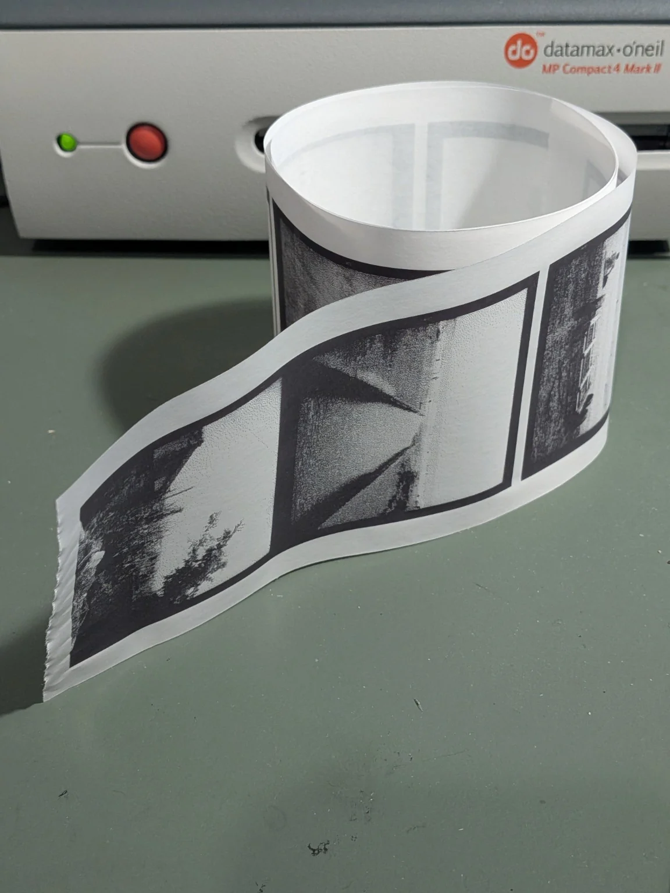
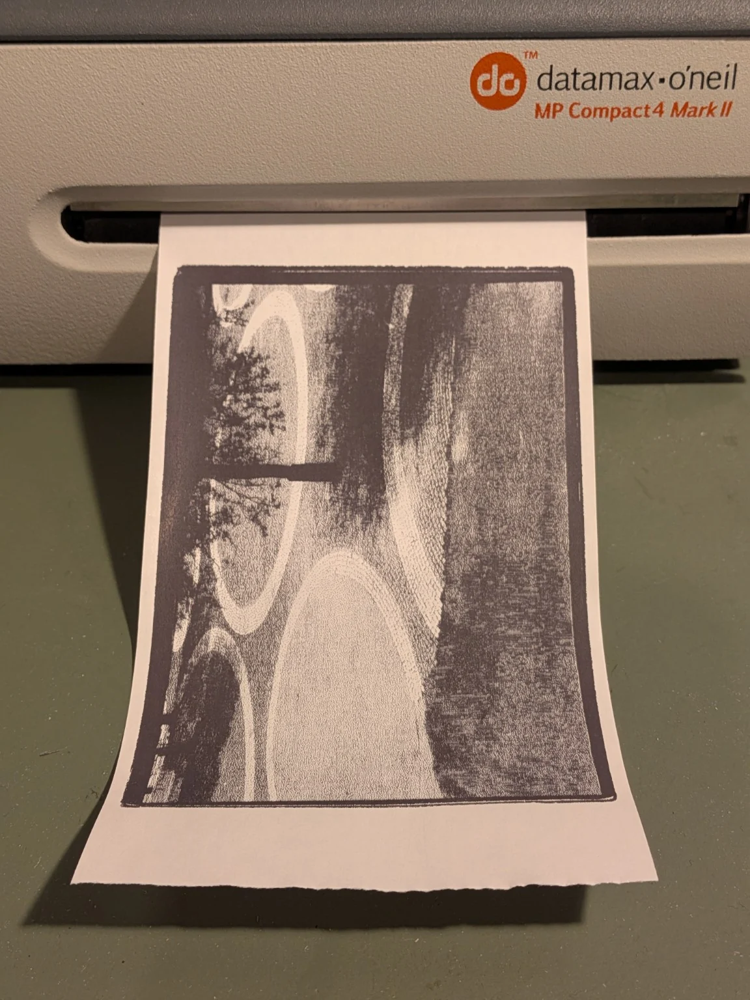
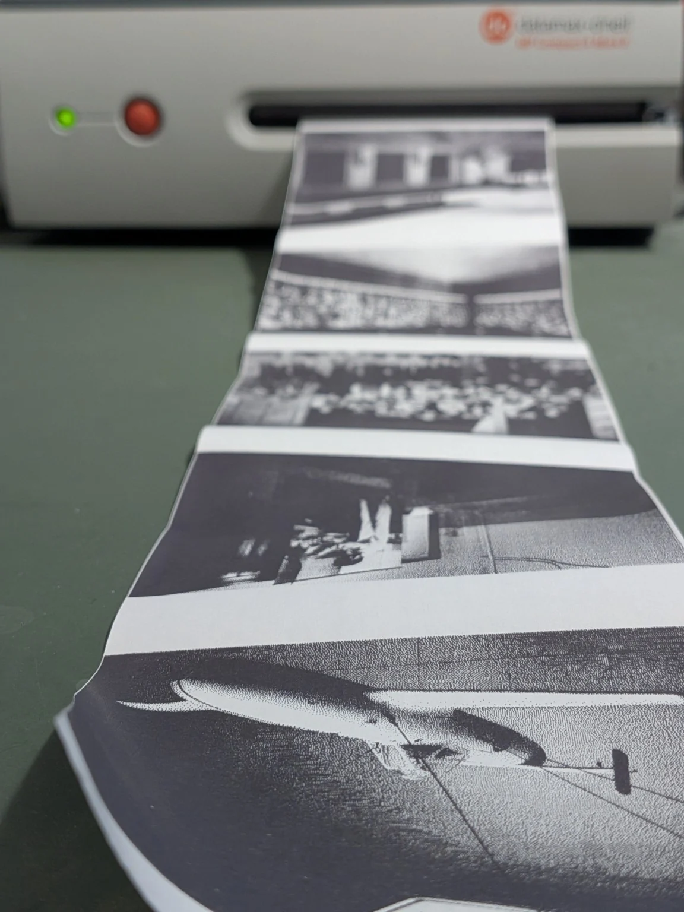
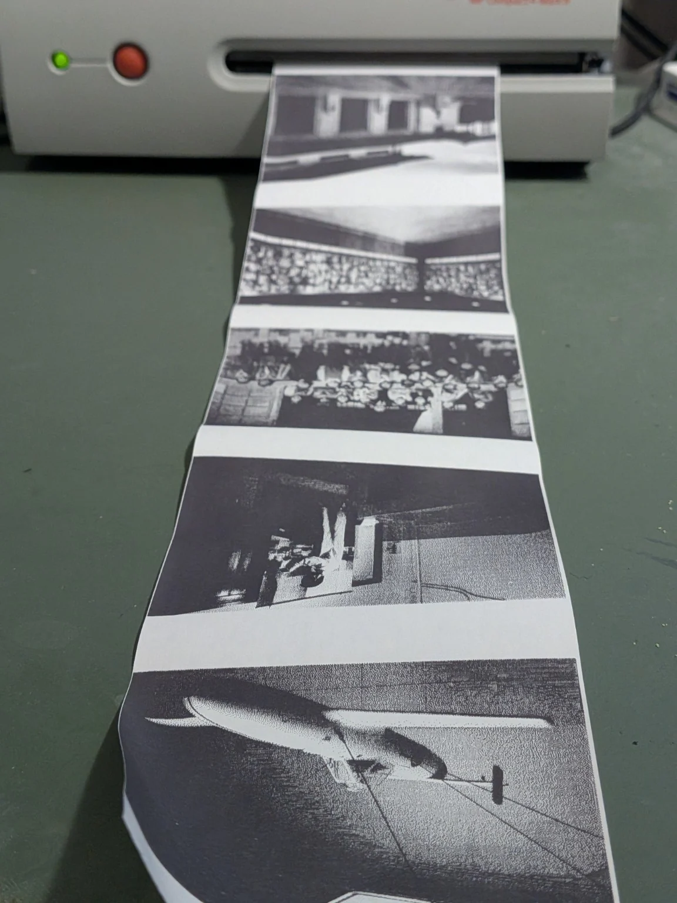
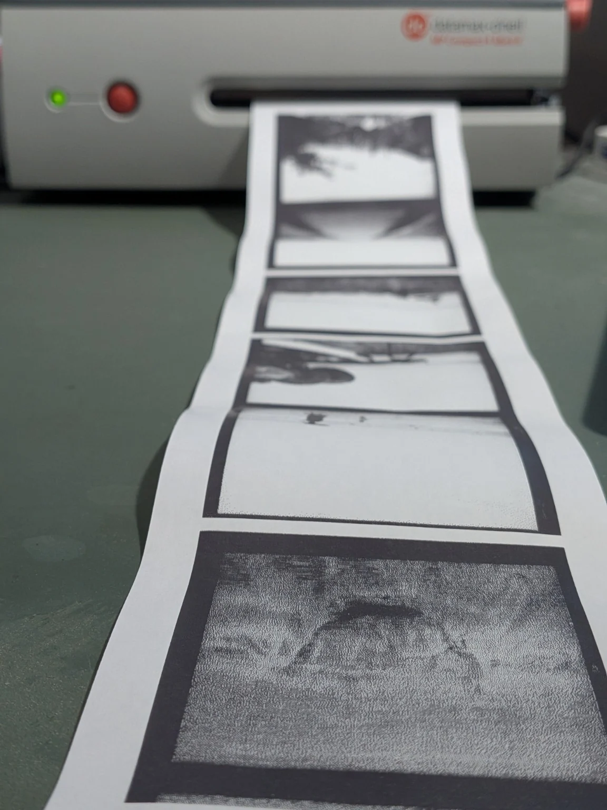
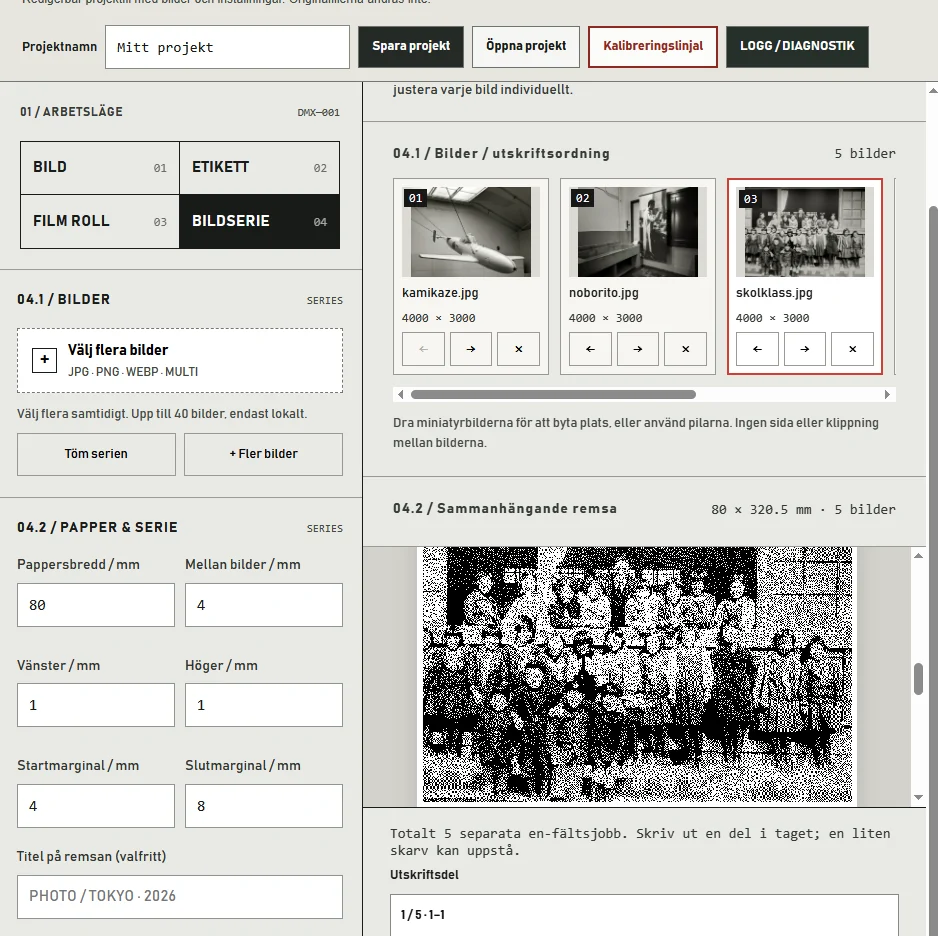

Datamax–O’Neil
A film roll, printed differently.
An industrial label printer acquired for film-cassette labels has become an experimental photographic instrument. A sequence of analogue photographs is translated into monochrome dots and printed on a continuous strip of thermal paper.
After several rounds of printer commands, paper-path tests and image preparation, the first physical photographic strips were made in November 2026.

The first photographic strips.
The output is not a simulation. These photographs document real strips of images printed by the Datamax printer. Their tonal range is produced through black dots and unprinted paper, making grain, pattern and sequencing part of the object itself.




Making an industrial printer useful again.
The original objective was practical: labels for film cassettes and processing information. The printer, connected to a Windows computer by USB, required carefully formatted commands and a reliable print bridge rather than simply sending an image to an ordinary office printer.
Early tests established a repeatable command path, including a small black test mark. The later FILM ROLL workflow takes a photographic sequence and divides it into manageable print jobs, leaving room for paper feeding, image processing and manual inspection between sections.
It is an intentionally low-resolution output. The aim is not to imitate a conventional photographic enlargement, but to explore another physical way of reading a roll of film.
Seven sections acknowledged.
The diagnostic log from 15 November 2026 records seven consecutive FILM ROLL print requests. Each was accepted by the Windows bridge with HTTP 200 and ok=true. The queue was MP Compact4 Mark II (203 dpi); the logged paper setting was 80 × 116.125 mm.
View individual print requests
| Time | Section | Job | Payload | MaxFeed |
|---|---|---|---|---|
| 09:45:07 | 1 / 8 | 67 | 176,644 B | 119.2 mm |
| 09:45:13 | 2 / 8 | 68 | 118,318 B | 80.8 mm |
| 09:45:17 | 3 / 8 | 69 | 176,644 B | 119.2 mm |
| 09:45:21 | 4 / 8 | 70 | 104,258 B | 71.5 mm |
| 09:45:25 | 5 / 8 | 71 | 176,644 B | 119.2 mm |
| 09:45:29 | 6 / 8 | 72 | 96,082 B | 66.2 mm |
| 09:45:32 | 7 / 8 | 73 | 176,644 B | 119.2 mm |
All seven requests: POST /api/print · HTTP 200 · ok=true. MaxFeed is the logged request parameter, not a measured paper length.
The supplied log does not include section 8/8. Bridge acknowledgements establish successful submission to the print queue, not independent proof of every section's physical completion. The accompanying photographs separately document physical output.

Paper, contrast, permanence.
How much image information survives at 203 dpi? Which halftoning and contrast settings suit different negatives? How should frames and their annotations be spaced along a roll?
Thermal paper is not an archival photographic material. Its response to heat, light and time is part of the experiment, not a solved conservation problem. Mechanical adaptation for ordinary paper rolls and repeatability across complete sequences remain areas for further refinement.
This page records a working experimental use of the machine. It does not claim a commercially ready printer conversion or archival durability.